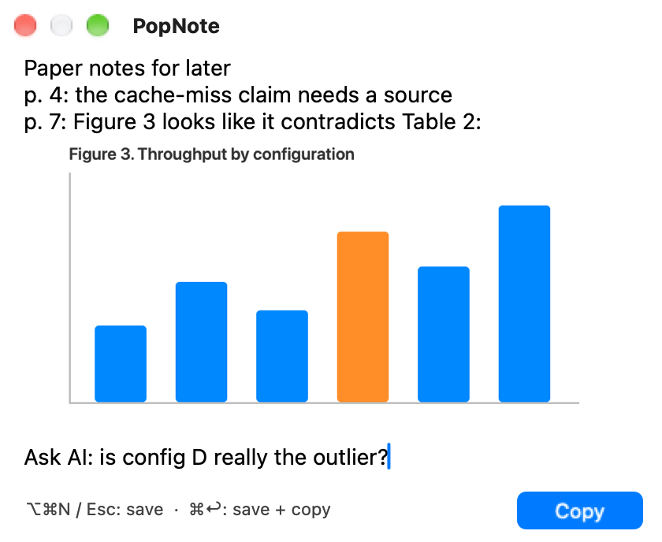
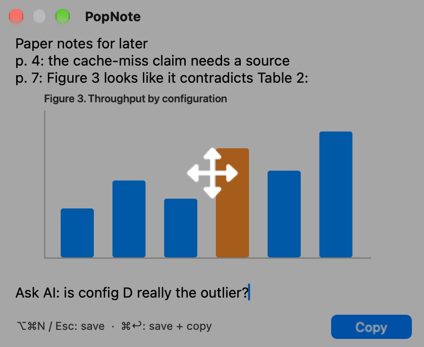

PopNote
A note that's one keystroke away. Jot an idea down without leaving what you're doing, then hand it to an AI later.
macOS 13 or later · Apple silicon and Intel · free

How it's used
Press ⌥⌘N and a note floats over whatever you're doing, full-screen apps included. Type, drop in a screenshot, press ⌥⌘N again and it's saved and gone. When you're ready, ⌘↩ copies the text and images together, ready to paste into a chat with an AI.
Tip: put ⌥⌘N on a spare mouse button (for example with Logi Options+). Then opening and saving a note is one click.
Keys
| ⌥⌘N | Open a new note. Press again to save and close. |
| Esc | Save and close. |
| ⌘↩ | Save, copy to clipboard (with images), and close. |
| Hold ⌃ and drag | Move the window from anywhere. |
| Double-click title bar | Fit the window to the note. |
| ⌘↑ / ⌘↓ | Flip through saved notes. The new note is kept while you look. |
| Hold ⌃, click the lock | Keep the note on the current full-screen app instead of following you. |

Where notes go
Each note is a Markdown file in ~/Documents/PopNote/, named by date and first line. Images are saved at full resolution in attachments/ next to them. No account, no cloud, nothing else to set up.
Install
- Download PopNote.dmg, open it, and drag PopNote to Applications.
- Open PopNote. macOS will say it can't check the app for malware. That's because it isn't notarized by Apple, not because anything is wrong.
- Go to System Settings → Privacy & Security, scroll down, and click Open Anyway. You only do this once.
PopNote lives in the menu bar. Turn on Launch at Login there.
Prefer to build it yourself? Clone the repo and run ./build.sh (needs the Xcode Command Line Tools).